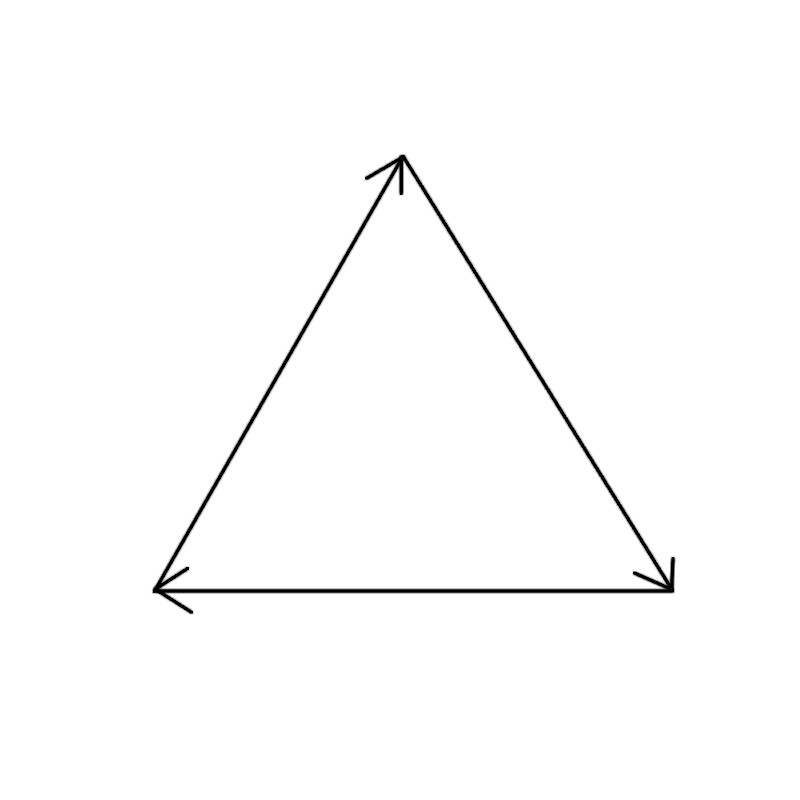
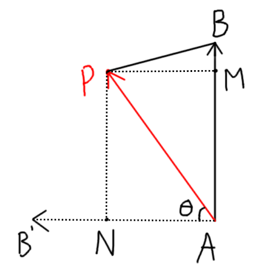

Software Rasterizer và Depth buffer
Ta đang sử dụng các hàm có sẵn của canvas context để vẽ, đặc biệt là hàm fill để tô màu các tam giác của chúng ta. Nhưng làm như vậy thì ta đang cho rằng các tam giác chỉ cần vẽ một màu duy nhất từ đầu đến cuối, nhưng mà khi ta muốn làm các thứ nâng cao hơn như ánh sáng hay texture thì điều đó tất nhiên sai.Ta phải cần một cách nào đó để có thể vẽ được từng pixel một của một tam giác, để ta có khả năng control được từng pixel một cho những thứ nâng cao về sau. Cho nên trong blog này ta sẽ build một thứ gọi là Software Rasterizer (chữ "Software" đến từ việc nó chạy bằng CPU).
Ta phải lùi lại khỏi engine của chúng ta một chút và thử vẽ một thứ đơn giản mà không cần lạm dụng các hàm có sẵn của canvas (ta vẫn cần ít nhất một hàm để thật sự vẽ gì đó lên canvas tho). Canvas không có hàm vẽ 1 pixel, nhưng có hàm rect để vẽ một hình chữ nhật, trên lý thuyết ta có thể dùng hàm này để vẽ từng pixel, nhưng mà nó sẽ RẤT LÀ LAG. Cách tốt hơn là ta sẽ tạo một mảng 2 chiều chứa hết các pixel trong canvas, ta sẽ thay đổi các giá trị trên mảng 2 chiều đó, sau đó cuối frame ta sẽ dùng mảng 2 chiều đó để gán các pixel vào một ImageData rồi sau đó chỉ cần vẽ ImageData đó lên canvas.
Lưu ý là ImageData là mảng một chiều, mỗi 4 giá trị liền kề nhau của nó đại diện cho giá trị RGBA (0-255) của một pixel, và mỗi lần hết số pixel của 1 hàng thì nó sẽ tới những pixel của hàng tiếp theo. Ví dụ với canvas 400x300, pixel ở hàng 50 cột 60 sẽ có giá trị red ở 50 * 400 + 60, giá trị green ở 50 * 400 + 61, tương tự với blue và alpha.
Trước khi làm gì đó liên quan tới rasterize, ta cần tạo một class là kiểu dữ liệu cho màu:
class Color {
constructor(r, g, b) {
this.r = r;
this.g = g;
this.b = b;
}
updateColor(r, g, b) {
this.r = r;
this.g = g;
this.b = b;
}
}class Rasterizer {
constructor() {
this.imageData = ctx.createImageData(canvas.width, canvas.height);
this.screenBuffer = [];
for (let i = 0; i < canvas.height; i++) {
let screenRow = [];
for (let j = 0; j < canvas.width; j++) {
screenRow.push(new Color(255, 255, 255));
}
this.screenBuffer.push(screenRow);
}
}
}drawCall() {
let index = 0;
for (let y = 0; y < canvas.height; y++) {
for (let x = 0; x < canvas.width; x++) {
const c = this.screenBuffer[y][x];
this.imageData.data[index++] = c.r;
this.imageData.data[index++] = c.g;
this.imageData.data[index++] = c.b;
this.imageData.data[index++] = 255;
}
}
ctx.putImageData(this.imageData, 0, 0);
}clearScreen() {
for (let i = 0; i < this.screenBuffer.length; i++) {
for (let j = 0; j < this.screenBuffer[i].length; j++) {
this.screenBuffer[i][j].updateColor(240, 240, 240);
}
}
}Ta sẽ bắt đầu từ việc xét lại thứ tự các đỉnh mà ta định nghĩa cho tam giác trong engine chúng ta, cụ thể là cùng chiều kim đồng hồ như sau:


Bây giờ ta phải chuyển nó thành 1 công thức đơn giản để dễ cài đặt, với \(A=(a_x, a_y), B=(b_x, b_y), P=(p_x, p_y)\), ta có \(\vec{AB}=(b_x-a_x, b_y-a_y), \vec{AB'}=(a_y-b_y, b_x-a_x), \vec{AP}=(p_x-a_x, p_y-a_y)\). Suy ra \(\langle \vec{AB'}, \vec{AP} \rangle = (a_y-b_y)(p_x-a_x) + (b_x-a_x)(p_y-a_y)\). Công thức này người ta gọi là Edge function, mình sẽ ghi tắt nó là \(E(A, B, P)\), vậy thì điểm \(P\) nằm bên trái của vector \(AB\) nếu \(E(A, B, P) > 0\).
Như vậy, một điểm \(P\) sẽ nằm trong tam giác \(ABC\) nếu \(E(A, B, P) > 0\), \(E(B, C, P) > 0\), và \(E(C, A, P) > 0\).
Ta bắt tay vào việc code thôi 😳 đầu tiên là edge function của chúng ta:
function edgeFunction(a, b, p) {
return (a[1] - b[1]) * (p[0] - a[0]) + (b[0] - a[0]) * (p[1] - a[1]);
}Ta tạo lại class Triangle, nhưng lúc này constructor sẽ xem mỗi đỉnh như 1 mảng như trên, thay vì là Vector3. Có hàm isPointInTriangle để check nếu 1 điểm nằm trong tam giác đó:
class Triangle {
constructor(vertices = []) {
if (vertices.length == 0) {
this.vertices = [];
for (let i = 0; i < 3; i++) {
this.vertices.push([0, 0]);
}
} else {
this.vertices = vertices;
}
}
isPointInTriangle(p) {
const e1 = edgeFunction(this.vertices[0], this.vertices[1], p);
const e2 = edgeFunction(this.vertices[1], this.vertices[2], p);
const e3 = edgeFunction(this.vertices[2], this.vertices[0], p);
return e1 > 0 && e2 > 0 && e3 > 0;
}
}let testTri = new Triangle([
[-0.25, -0.25],
[0, 0.25],
[0.25, -0.25],
]);let screenTri = new Triangle();
for (let i = 0; i < testTri.vertices.length; i++) {
screenTri.vertices[i] = [
testTri.vertices[i][0] * canvas.width + canvas.width / 2,
-testTri.vertices[i][1] * canvas.height + canvas.height / 2
];
}
for (let y = 0; y < canvas.height; y++) {
for (let x = 0; x < canvas.width; x++) {
if (screenTri.isPointInTriangle([x, y])) {
rasterizer.screenBuffer[y][x].updateColor(255, 0, 0);
}
}
}boundingBox() {
let minX = Math.min(this.vertices[0][0], this.vertices[1][0], this.vertices[2][0]);
let maxX = Math.max(this.vertices[0][0], this.vertices[1][0], this.vertices[2][0]);
let minY = Math.min(this.vertices[0][1], this.vertices[1][1], this.vertices[2][1]);
let maxY = Math.max(this.vertices[0][1], this.vertices[1][1], this.vertices[2][1]);
// vì sử dụng cho pixel nên phải đảm bảo kết quả là số nguyên và nằm trong kích thước canvas
minX = Math.max(0, parseInt(minX));
maxX = Math.min(canvas.width - 1, parseInt(maxX));
minY = Math.max(0, parseInt(minY));
maxY = Math.min(canvas.height - 1, parseInt(maxY));
return [minX, maxX, minY, maxY];
}let bbox = screenTri.boundingBox();
for (let y = bbox[2]; y <= bbox[3]; y++) {
for (let x = bbox[0]; x <= bbox[1]; x++) {
if (screenTri.isPointInTriangle([x, y])) {
rasterizer.screenBuffer[y][x].updateColor(255, 0, 0);
}
}
}Đầu tiên ta cần thêm những thứ mới từ rasterizer cơ bản của chúng ta vào engine: edgeFunction (không nằm trong class nào cả vì nó thuần toán học), class Color, class Rasterizer, 2 hàm isPointInTriangle và boundingBox cho class Triangle. Sau đó ở bên dưới chỗ chạy chính, ta cũng thêm 1 object Rasterizer và sử dụng rasterizer.clearScreen() thay vì ctx.clearRect.
Ở vòng for cuối mà ta nhân kích thước canvas và vẽ triangle, ta sẽ bỏ luôn vòng for đó và đưa cho rasterizer xử lí, vì chức năng của rasterizer là nhận vào các tam giác ở clip space và vẽ ra màn hình các tam giác đó bằng cách nào đó ta không quan tâm. Như vậy, ta tạo thêm một hàm trong class Rasterizer để xử lí các tam giác truyền vào:
processTriangles(tris) {
for (let tri of tris) {
// nhân kích thước canvas như trước giờ ta làm
let vertices = tri.vertices;
for (let i = 0; i < vertices.length; i++) {
vertices[i] = new Vector3(
vertices[i].x * (canvas.width / 2) + canvas.width / 2,
-vertices[i].y * (canvas.height / 2) + canvas.height / 2,
1);
}
// tam giác hiện tại đã ở screen space, tìm bounding box và vẽ nó ra
const bbox = tri.boundingBox();
for (let y = bbox[2]; y <= bbox[3]; y++) {
for (let x = bbox[0]; x <= bbox[1]; x++) {
if (tri.isPointInTriangle([x, y])) {
this.screenBuffer[y][x].updateColor(204, 204, 204);
}
}
}
}
}rasterizer.processTriangles(clippedTris);
rasterizer.drawCall();Blog này đáng lẽ sẽ dừng ở đây, nhưng bạn nhìn title thì còn có 1 thứ mình chưa nói nữa 😳 Engine hiện tại vẫn đang có vấn đề, và vấn đề đó chỉ hiện rõ ra khi ta để 2 cube này khác màu nhau và overlap với nhau.
Bây giờ ta sẽ cho mỗi triangle lưu thêm một giá trị là màu, điều này nghĩa là các thao tác tạo triangle mới dựa trên triangle cũ đều phải giữ lại được giá trị màu đó. Đầu tiên là thêm cho constructor và hàm clone của class Triangle:
class Triangle {
constructor(vertices = [], color = new Color(255, 255, 255)) { // <----------
if (vertices.length == 0) {
this.vertices = [];
for (let i = 0; i < 3; i++) {
this.vertices.push(new Vector3(0, 0, 0));
}
} else {
this.vertices = vertices;
}
this.color = color; // <----------
}
clone() {
let tri = new Triangle();
for (let i = 0; i < this.vertices.length; i++)
tri.vertices[i] = this.vertices[i].clone();
tri.color = this.color; // <----------
return tri;
}
...
}clipAgainstPlane(plane) {
...
if (frontPoints.length == 3) {
outTris.push(this.clone());
} else if (frontPoints.length == 1 && behindPoints.length == 2) {
let outTri = new Triangle();
...
outTri.color = this.color;
outTris.push(outTri);
} else if (frontPoints.length == 2 && behindPoints.length == 1) {
let outTri1 = new Triangle(), outTri2 = new Triangle();
...
outTri1.color = this.color;
outTris.push(outTri1);
...
outTri2.color = this.color;
outTris.push(outTri2);
}
return outTris;
}class Cube {
constructor(pos, eulerAngles, scale, color) {
this.tris = [];
this.pos = pos;
this.scale = scale;
this.rotation = Quaternion.buildQuaternionEuler(eulerAngles);
this.color = color; // <----------
this.generateInitialTriangles();
}
generateInitialTriangles() {
// FRONT
this.tris.push(new Triangle([
new Vector3(-0.5, -0.5, -0.5),
new Vector3(-0.5, 0.5, -0.5),
new Vector3(0.5, 0.5, -0.5)], this.color));
this.tris.push(new Triangle([
new Vector3(-0.5, -0.5, -0.5),
new Vector3(0.5, 0.5, -0.5),
new Vector3(0.5, -0.5, -0.5)], this.color));
...
}
}processTriangles(tris) {
for (let tri of tris) {
...
const bbox = tri.boundingBox();
for (let y = bbox[2]; y <= bbox[3]; y++) {
for (let x = bbox[0]; x <= bbox[1]; x++) {
if (tri.isPointInTriangle([x, y])) {
this.screenBuffer[y][x].updateColor(tri.color.r, tri.color.g, tri.color.b);
}
}
}
}
}let camera = new Camera(new Vector3(0, 1.5, 1.5), new Vector3(-15, 0, 0), 2, 0.2);
...
let cube1 = new Cube(new Vector3(0, 0.35, 5), new Vector3(0, 0, 0), new Vector3(0.7, 0.7, 0.7), new Color(255, 0, 0));
let cube2 = new Cube(new Vector3(0, 0, 5), Vector3.zero, new Vector3(3, 0.1, 3), new Color(0, 255, 0));Để xử lý vấn đề này, ta phải implement một thứ gọi là depth buffer (cũng giống screen buffer, nó là một mảng 2 chiều đại diện cho mọi pixel trên canvas). Công dụng của nó là lưu lại độ sâu của từng pixel, trong quá trình vẽ, nếu độ sâu mới của 1 pixel nhỏ hơn độ sâu hiện tại của pixel đó (được lưu ở depth buffer) thì mới được vẽ chồng lên và đồng thời update depth buffer.
Nghe có vẻ đơn giản, cho tới khi bạn suy nghĩ sâu thêm là làm sao để mình biết được độ sâu của một điểm bất kỳ trên tam giác? Ta biết được độ sâu của 3 đỉnh tam giác thông qua giá trị z của từng đỉnh, nhưng mà một điểm bất kỳ trên nó thì phải làm sao? Thật ra ta cũng làm dựa trên 3 đỉnh của tam giác, một điểm bất kỳ sẽ bị ảnh hưởng bởi 3 đỉnh nhưng gần đỉnh nào hơn thì nó sẽ bị ảnh hưởng bởi đỉnh đó nhiều hơn (độ sâu của điểm càng bằng đỉnh đó hơn). Ta có thể tính được sự ảnh hưởng đó bằng cách tính diện tích của tam giác được tạo thành bởi điểm đó với 2 đỉnh còn lại, ví dụ với tam giác \(ABC\), điểm \(P\) càng gần điểm \(C\) hơn thì diện tích tam giác \(ABP\) càng lớn, đồng nghĩa sự ảnh hưởng của \(C\) lên \(P\) càng lớn.
Ta biết diện tích tam giác \(ABP\) được tính bằng công thức \(\frac{1}{2}.PM.AB\) với \(PM\) là đường cao của tam giác \(ABP\), nhưng việc tính thêm đường cao các thứ vào trong code ta thì có lẽ hơi phức tạp. Thật ra có cách dễ hơn 😳 mình sẽ quay lại hình "điểm \(P\) nằm bên trái \(\vec{AB}\)" ở trên và vẽ thêm vào:

What? Diện tích tam giác \(ABP\) bằng một nửa tích vô hướng của \(\vec{AB'}\) và \(\vec{AP}\) 😳 (đừng quên \(\vec{AB'}\) là \(\vec{AB}\) nhưng xoay 90 độ ngược chiều kđh). Và như ta đã chứng minh, tích vô hướng đó cũng là edge function của cạnh \(AB\) và điểm \(P\), như vậy là ta có thể tính được tầm ảnh hưởng của 1 đỉnh lên 1 điểm trong tam giác bằng edge function 😳
Vì một điểm bị ảnh hưởng bởi cả 3 đỉnh, nên tốt nhất ta nên chuẩn hóa hết 3 tầm ảnh hưởng bằng cách lấy 3 edge function với \(P\) đó chia cho \(E(A,B,C)\), như vậy tổng của 3 tầm ảnh hưởng luôn là 1. Xin chúc mừng, chúng ta đã reinvent lại Barycentric Coordinate của tam giác 😳 Hệ tọa độ này là hệ tọa độ trong 1 tam giác mà đại diện cho "độ gần của 1 điểm so với 3 đỉnh", hoặc "nội suy tuyến tính giữa 3 đỉnh", có dạng \((\frac{E(B,C,P)}{E(A,B,C)};\frac{E(C,A,P)}{E(A,B,C)};\frac{E(A,B,P)}{E(A,B,C)})\). Ví dụ nếu điểm \(P\) ở ngay đỉnh \(A\) thì barycentric coordinate là \((1;0;0)\), \(B\) thì là \((0;1;0)\) và \(C\) thì là \((0;0;1)\). Với điểm cách đều ba đỉnh của một tam giác (tâm đường tròn ngoại tiếp tam giác) thì barycentric coordinate là \((\frac{1}{3};\frac{1}{3};\frac{1}{3})\).
Như vậy ta có được hàm tính barycentric coordinate như sau:
class Triangle {
...
barycentricCoords(p) {
const v0 = [this.vertices[0].x, this.vertices[0].y];
const v1 = [this.vertices[1].x, this.vertices[1].y];
const v2 = [this.vertices[2].x, this.vertices[2].y];
const area = edgeFunction(v0, v1, v2);
const w0 = edgeFunction(v1, v2, p) / area;
const w1 = edgeFunction(v2, v0, p) / area;
const w2 = edgeFunction(v0, v1, p) / area;
return [w0, w1, w2];
}
}class Rasterizer {
constructor() {
this.imageData = ctx.createImageData(canvas.width, canvas.height);
this.screenBuffer = [];
this.depthBuffer = []; // <-------------------
for (let i = 0; i < canvas.height; i++) {
let screenRow = [];
let depthRow = [];
for (let j = 0; j < canvas.width; j++) {
screenRow.push(new Color(255, 255, 255));
depthRow.push(Infinity); // depth càng nhỏ càng gần màn hình (càng được ưu tiên vẽ)
}
this.screenBuffer.push(screenRow);
this.depthBuffer.push(depthRow); // <-------------------
}
}
clearScreen() {
for (let i = 0; i < this.screenBuffer.length; i++) {
for (let j = 0; j < this.screenBuffer[i].length; j++) {
this.screenBuffer[i][j].updateColor(240, 240, 240);
this.depthBuffer[i][j] = Infinity; // <-------------------
}
}
}
}processTriangles(tris) {
for (let tri of tris) {
let vertices = tri.vertices;
for (let i = 0; i < vertices.length; i++) {
vertices[i] = new Vector3(
vertices[i].x * (canvas.width / 2) + canvas.width / 2,
-vertices[i].y * (canvas.height / 2) + canvas.height / 2,
vertices[i].z); // <------------------------ giữ lại giá trị z
}
const bbox = tri.boundingBox();
for (let y = bbox[2]; y <= bbox[3]; y++) {
for (let x = bbox[0]; x <= bbox[1]; x++) {
if (tri.isPointInTriangle([x, y])) {
const baryCoords = tri.barycentricCoords([x, y]);
const z = tri.vertices[0].z * baryCoords[0] + tri.vertices[1].z * baryCoords[1] + tri.vertices[2].z * baryCoords[2]; // tính độ sâu pixel hiện tại dựa trên độ sâu và sự ảnh hưởng của 3 đỉnh
if (z < this.depthBuffer[y][x]) { // check nếu nhỏ hơn độ sâu hiện tại thì quất
this.depthBuffer[y][x] = z;
this.screenBuffer[y][x].updateColor(tri.color.r, tri.color.g, tri.color.b);
}
}
}
}
}
}Optimize: Incremental Edge Function
Những gì mình viết ở trên mang tính dễ đọc và pseudocode nhất có thể. Tuy nhiên nó có thể được optimize rất nhiều. Bạn hãy để ý 2 cái vòng for trong cùng, nó chạy 1 lần cho mỗi pixel của mỗi tam giác, mỗi frame. Bây giờ ta thử đếm xem hiện tại mỗi pixel ta đang làm những gì:if (tri.isPointInTriangle([x, y])) {
const baryCoords = tri.barycentricCoords([x, y]);
...
}- 2 cái mảng
[x, y]được tạo ra chỉ để truyền tham số. - isPointInTriangle: tạo 3 mảng v0, v1, v2 rồi gọi edgeFunction 3 lần.
- barycentricCoords: tạo 3 mảng v0, v1, v2 nữa, gọi edgeFunction 4 lần (3 cạnh + 1 lần cho diện tích), rồi tạo thêm 1 mảng nữa để return.
- 3 trong 7 lần gọi edgeFunction bị tính trùng: isPointInTriangle tính \(E(A,B,P), E(B,C,P), E(C,A,P)\) rồi bỏ đi, xong barycentricCoords tính lại đúng 3 giá trị đó. Chỉ cần tính 1 lần rồi dùng cho cả 2 việc là xong.
- Trong hàm barycentricCoords cũng tính lại liên tục \(E(A,B,C)\) cho mỗi pixel, chỉ cần tính 1 lần duy nhất cho mỗi tam giác
- 9 cái mảng mỗi pixel là 9 object rác mỗi pixel, Garbage Collector sẽ khá vất vả 🥵
Bạn có biết là bạn không cần phải tính lại edge function cho từng pixel một bằng công thức full không. Bạn hãy thử quay lại công thức edge function. Với \(A=(a_x, a_y), B=(b_x, b_y), P=(p_x, p_y)\), Ta có: $$ E(A, B, P) = (a_y-b_y)(p_x-a_x) + (b_x-a_x)(p_y-a_y) $$ Thay vì gọi là \(E(A, B, P)\), ta xem \(A\) và \(B\) là cố định. Còn lại \(P\) là tham số, ta chuyển thành 2 tham số \(p_x, p_y\) luôn: $$ E(p_x, p_y) = (a_y-b_y)(p_x-a_x) + (b_x-a_x)(p_y-a_y) $$ Ta thử nhân phân phối lại với nhau và bốc ra theo tham số \(p_x\), \(p_y\): $$ \begin{eqnarray} E(p_x, p_y) = a_yp_x-a_xa_y-b_yp_x+a_xb_y + b_xp_y-a_yb_x - a_xp_y + a_xa_y\\ = p_x (a_y-b_y) + p_y(b_x-a_x)+a_xb_y-a_yb_x \end{eqnarray} $$ Ta thấy rằng: \(E(p_x, p_y)\) là một hàm số bậc 1, nên khi ta thay đổi \(p_x\), \(p_y\) 1 lượng cố định thì hàm \(E(p_x, p_y)\) cũng thay đổi 1 lượng cố định. Cụ thể là khi ta tăng \(p_x\) lên 1 thì \(E(p_x, p_y)\) sẽ tăng 1 lượng C, tăng \(p_x\) lên 1 nữa thì \(E(p_x, p_y)\) cũng tăng 1 lượng C nữa.
Điều này có nghĩa là gì? Điều này có nghĩa là từ \(E(p_x, p_y)\) ta có thể tính \(E(p_{x+1}, p_y)\) hoặc \(E(p_x, p_{y+1})\) chỉ bằng cách cộng 1 hằng số C, it's QUY HOẠCH ĐỘNG TIME BABY.
Đầu tiên ta tính hằng số ở trục x: $$ \begin{eqnarray} E(p_{x+1}, p_y) - E(p_x, p_y) = p_{x+1} (a_y-b_y) + p_y(b_x-a_x)+a_xb_y-a_yb_x - [p_x (a_y-b_y) + p_y(b_x-a_x)+a_xb_y-a_yb_x] \\ = a_yp_{x+1} - b_yp_{x+1} + b_xp_y - a_xp_y + a_xb_y - a_yb_x - a_yp_x + b_yp_x - b_xp_y + a_xp_y - a_xb_y + a_yb_x \\ = a_yp_{x+1} - b_yp_{x+1} - a_yp_x + b_yp_x \\ = a_y - b_y \\ \end{eqnarray} $$ $$ \implies E(p_{x+1}, p_y) = E(p_x, p_y) + a_y - b_y $$ Với trục y: $$ \begin{eqnarray} E(p_x, p_{y+1}) - E(p_x, p_y) = p_x (a_y-b_y) + p_{y+1}(b_x-a_x)+a_xb_y-a_yb_x - [p_x (a_y-b_y) + p_y(b_x-a_x)+a_xb_y-a_yb_x] \\ = a_yp_x - b_yp_x + b_xp_{y+1} - a_xp_{y+1} + a_xb_y - a_yb_x - a_yp_x + b_yp_x - b_xp_y + a_xp_y - a_xb_y + a_yb_x \\ = b_xp_{y+1} - a_xp_{y+1} - b_xp_y + a_xp_y \\ = b_x - a_x \\ \end{eqnarray} $$ $$ \implies E(p_x, p_{y+1}) = E(p_x, p_y) + b_x - a_x $$ Có 2 công thức này, từ giờ ta chỉ cần tính hằng số cho trục X và Y cho mỗi cạnh tam giác. Rồi trong 2 vòng for pixel ta cứ cộng vào mà tính edge function của pixel hiện tại so với 3 cạnh tam giác. Kỹ thuật này gọi là incremental (hoặc stepping) edge function, và nó là cách mà mọi rasterizer thật, kể cả phần cứng trong GPU, đều làm.
Bắt tay vào code thôi. Ta viết lại edgeFunction cho nó nhận vào Vector3 thay vì mảng như trước:
function edgeFunction(v0, v1, p) {
return (v0.y - v1.y) * (p.x - v0.x) + (v1.x - v0.x) * (p.y - v0.y);
}class Triangle {
...
calculateSignedDoubleArea() {
this.signedDoubleArea = edgeFunction(this.vertices[0], this.vertices[1], this.vertices[2]);
}
}processTriangles(tris) {
for (let tri of tris) {
// nhân kích thước canvas như trước giờ
let vertices = tri.vertices;
for (let i = 0; i < vertices.length; i++) {
vertices[i] = new Vector3(
vertices[i].x * (canvas.width / 2) + canvas.width / 2,
-vertices[i].y * (canvas.height / 2) + canvas.height / 2,
vertices[i].z);
}
tri.calculateSignedDoubleArea(); // hằng số của tam giác, tính 1 lần ở đây thay vì tính lại mỗi pixel
const bbox = tri.boundingBox();
// tính edge function của 3 cạnh tại góc trên trái của bounding box, đây là 3 lần gọi edgeFunction duy nhất cho cả tam giác
let edgeFunctionRow01 = edgeFunction(
tri.vertices[0],
tri.vertices[1],
new Vector3(bbox[0], bbox[2], 0));
let edgeFunctionRow12 = edgeFunction(
tri.vertices[1],
tri.vertices[2],
new Vector3(bbox[0], bbox[2], 0));
let edgeFunctionRow20 = edgeFunction(
tri.vertices[2],
tri.vertices[0],
new Vector3(bbox[0], bbox[2], 0));
for (let y = bbox[2]; y <= bbox[3]; y++) {
// mỗi hàng mới thì bắt đầu lại từ giá trị ở đầu hàng đó
let edgeFunction01 = edgeFunctionRow01;
let edgeFunction12 = edgeFunctionRow12;
let edgeFunction20 = edgeFunctionRow20;
for (let x = bbox[0]; x <= bbox[1]; x++) {
// isPointInTriangle lúc trước, giờ chỉ còn 3 phép so sánh
if (edgeFunction01 > 0 && edgeFunction12 > 0 && edgeFunction20 > 0) {
// barycentricCoords lúc trước, giờ chỉ còn 3 phép chia
const baryCoord0 = edgeFunction12 / tri.signedDoubleArea;
const baryCoord1 = edgeFunction20 / tri.signedDoubleArea;
const baryCoord2 = edgeFunction01 / tri.signedDoubleArea;
const z = tri.vertices[0].z * baryCoord0 + tri.vertices[1].z * baryCoord1 + tri.vertices[2].z * baryCoord2;
if (z < this.depthBuffer[y][x]) {
this.depthBuffer[y][x] = z;
this.screenBuffer[y][x].updateColor(tri.color.r, tri.color.g, tri.color.b);
}
}
// qua pixel kế bên (x tăng 1)
edgeFunction01 += (tri.vertices[0].y - tri.vertices[1].y);
edgeFunction12 += (tri.vertices[1].y - tri.vertices[2].y);
edgeFunction20 += (tri.vertices[2].y - tri.vertices[0].y);
}
// qua hàng kế dưới (y tăng 1)
edgeFunctionRow01 += (tri.vertices[1].x - tri.vertices[0].x);
edgeFunctionRow12 += (tri.vertices[2].x - tri.vertices[1].x);
edgeFunctionRow20 += (tri.vertices[0].x - tri.vertices[2].x);
}
}
}